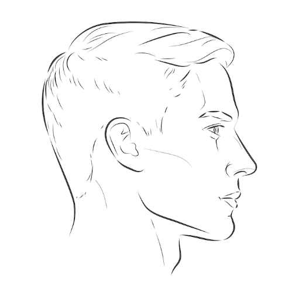

En este apartado podra evidenciar una grafica de barras con los
registros de ingreso y salida de los usuarios
Estadisticas
Listado
Encontrara una lista en la cual estan los usuarios con su
respectivo rol, la opción de modificar y el estado en el que se
encuentran, activo o inactivo
Vista base de datos
Cargar listado de Usuarios Exel
Encontrará un campo para subir un archivo tipo excel que permitirá
registrar multiples Usuarios al tiempo.
Crea Usuarios
En este apartado encontrara el instructivo para entrenar la
identificación del reconocimiento facial.
Frontal
Ubicación requerida para la foto
Ubiquese frente a la camara como se muestra en la imagen de
ejemplo a continuacion.
Lateral Izquierdo
Ubicación requerida para la foto
Ubique su lateral izquierdo frente a la camara como se muestra
en la imagen de ejemplo a continuacion.
Lateral Derecho
Ubicación requerida para la foto
Ubique su lateral derecho frente a la camara como se muestra en
la imagen de ejemplo a continuacion.

3/4 Izquierdo
Ubicación requerida para la foto
Ubique su lado 3/4 izquierdo frente a la camara como se muestra
en la imagen de ejemplo a continuacion.
3/4 Derecho
Ubicación requerida para la foto
Ubique su lado 3/4 derecho frente a la camara como se muestra en
la imagen de ejemplo a continuacion.
Al dar click en el siguiente boton lo redireccionara a una vista para
poder ejecutar el entrenamiento.